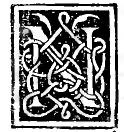

CHAPTER XV¶
On Its Sixth Inexpressible Effect

It is impossible for any rational quantity to be divided according to our said proportion without each of its parts being an irrational line called an apotome (residuo, [XIII.6]).
Numerical Demonstration
For example, let $10$ be the rational quantity that is to be divided according to the proportion having a mean and two extremes. I say that of necessity each of its parts must be an apotome (residuo):
One part, namely the lesser, will be $15 - \sqrt{125}$;
The other, namely the greater, will be $\sqrt{125} - 5$.